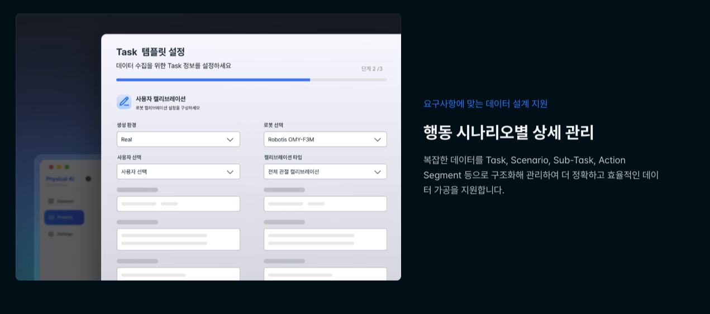
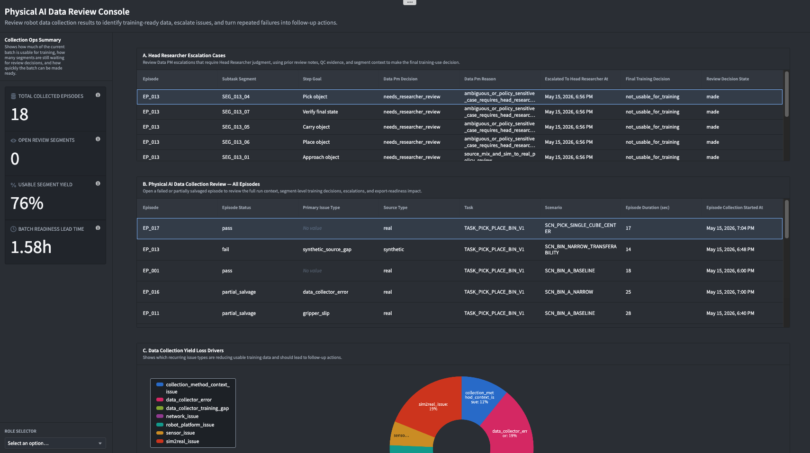
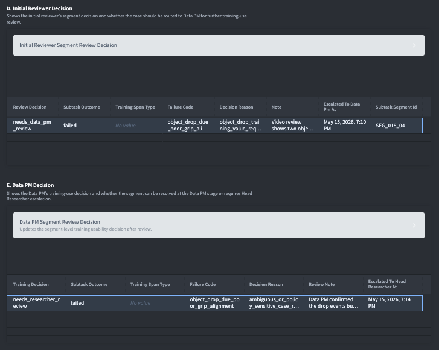
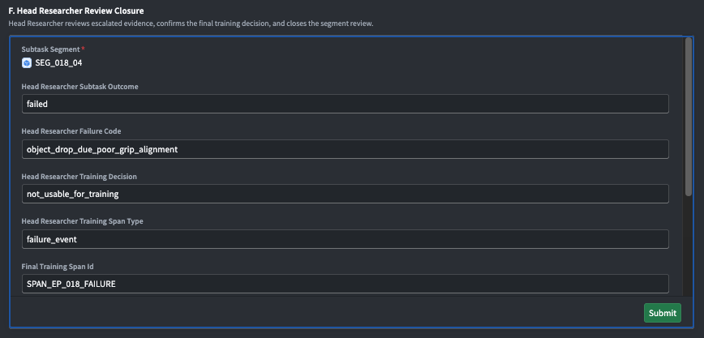

Portfolio case study · Physical AI data operations
Physical AI Data Review Workflow
Project Manager, Data Programs / Workflow Designer · September 2025 – February 2026
A case study on turning an undefined Physical AI data review bottleneck into a staged review workflow: QC signals, video-based first review, Data PM escalation, Head Researcher judgment, and training-readiness decisions.
Situation
This project was part of a KRW 34B government-funded Physical AI foundation-model initiative. My company was seconded to the lead research company to help define the data pipeline around large-scale Physical AI data collection.
When I joined, the team had navigation-data experience but little manipulation-data experience. There was no mature structure for collecting, reviewing, and deciding whether Physical AI episodes were usable for training. Both organizations were entering new territory under a government-proposal deadline.
Head Researcher time was the scarcest resource in this pipeline. Every case that did not strictly require their judgment was still consuming it, which meant data collection could not scale without first protecting that time.
Diagnosis
The first problem researchers named was simple: “Review is impossible.” Sensor-based auto-QC existed, but it did not close the loop. Flagged anomalies still needed video review, and unflagged episodes still needed a way to confirm training usability.
The visible bottleneck looked like data volume: more episodes and more scenarios. The deeper bottleneck was review structure. Scaling collection before defining usable vs. unusable data would only scale ambiguity.
The second issue was data grain. If the team could not pinpoint which subtask failed, it could not decide what to discard, what to salvage, or which collector guidance needed to change.
Approach
Designing the Task / Subtask structure
I interviewed the Head of Research and translated the pain points into an operating model. Treating each episode as pass/fail made it impossible to identify repeated failure patterns, improve collector instructions, or track action-level coverage in the database.
I proposed a Task / Subtask structure: each episode stayed as a task-level run, but collection, review, and storage were organized by ordered subtasks. That structure let reviewers pinpoint failure-prone subtasks, salvage usable segments, and build an action-level dataset instead of discarding whole episodes.
Scenario sat alongside this structure as a separate axis: the conditions a task was performed under, such as object count, object shape, or lighting. Episodes were also grouped into delivery batches, what the team informally called “the project,” each collected, processed, and shipped together.

China field visit: validating the review assumption
Engineers initially assumed that general reviewers would need sensor-graph training. I challenged that assumption because sensor meaning changes by task and project context. General reviewers should not be expected to visually interpret sensor graphs; that was exactly why auto-QC existed.
To validate the assumption, I looked for teams with real Physical AI data-collection operations at scale. Domestic robotics companies were reluctant to disclose operational details, so I researched China-based humanoid robotics companies and helped arrange meetings with two of the leading ones, including a visit to one company’s Shanghai office with our CTO.
The field visit changed the discussion. In the observed four-person workflow, one person demonstrated the task, one reviewed mainly by video, and two prepared the next environment. Sensor graphs were handled by auto-QC. After I shared the notes and sketches, video-based reviewer judgment became the practical design direction.
I also identified an internal simulation capability gap. Through an introduction from one of these meetings, I contacted a physics-based simulation vendor and gathered timing/cost inputs so the team could make a buy-vs-build decision on physics-based simulation support.
Redesigning the review workflow
After the field visit, I redesigned the review flow into three stages.
Initial Reviewers use video and guidelines to decide whether the demonstration followed the task requirements. They do not inspect sensor graphs.
Data PMs review ambiguous cases using video and the sensor flags auto-QC had already identified, not raw sensor graphs. They draw on broader project context and closer communication with researchers than Initial Reviewers do.
Head Researchers review only the hardest unresolved cases with the full evidence record and make the final training-usability judgment.
Each prior decision remains visible as read-only context in the next stage, so escalated cases carry an evidence trail instead of forcing senior reviewers to restart from zero.
I briefed the lead research company’s business executive on this workflow and on the company platform mock-up I designed with engineers.
What Changed
By the time I left, I could confirm two concrete changes.
First, the Task / Scenario / Subtask / Action Segment structure was reflected in the company’s platform demo. The KRW 34B government project was also approved, and our company was the only data-pipeline partner seconded directly to the lead research company.
Second, the review workflow changed. General reviewer work was defined around video evidence, while Data PM and Head Researcher review handled ambiguity and final training-usability judgment.
This also changed what reached the Head Researcher: only cases that Initial Reviewers and Data PMs could not resolve with video, guidelines, and sensor flags were escalated, instead of every case competing for the same scarce judgment.
After my secondment ended, the lead research company’s research division offered me a data pipeline manager position.
I could not measure later yield impact because I left before the government project formally began. The supported outcome is the operating-model shift: a previously undefined review problem became a staged workflow for Physical AI data review, escalation, and training-readiness judgment.
Framing
For me, this is the core Deployment Strategist pattern: the work is not only solving the problem a customer has already named. It is finding the real operating constraint, building a decision structure around it, and moving people so the structure works.
This project began with one sentence: “Review is impossible.” No one had defined what the actual problem was, what should come first, or what operating structure was needed.
My role was to interview researchers, structure the pain points, propose the Subtask concept, validate a critical assumption in China with the CTO, and translate those findings into platform design and workflow redesign.
I was not the engineer building the platform, but I designed with engineers, briefed the lead research company’s business executive, and saw the structure reflected in the company’s platform demo.
After the project, I rebuilt this workflow as a Palantir Foundry Workshop portfolio app. The screenshots below show that portfolio implementation, and a more detailed walkthrough is available here: Physical AI Data Review Console.
To make the source material checkable, I also published the two directly collected episodes used in the reconstruction as a small LeRobot-format sample: view EP_017 and EP_018.



If you would like to see the Workshop app directly, please contact me at ‘abby.dw.heo@gmail.com’ and I can provide access.